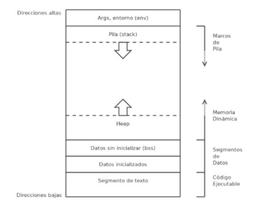

Los elementos básicos de Linux son los componentes fundamentales que forman parte del sistema operativo Linux y que son necesarios para su funcionamiento. Estos elementos incluyen:
Kernel: El núcleo del sistema operativo Linux. Es el corazón que gestiona los recursos del hardware y permite que el software se comunique con el hardware.
Shell: Es la interfaz entre el usuario y el núcleo del sistema operativo. Permite ejecutar comandos y programas.
Terminal: Es una ventana de texto donde puedes interactuar con el sistema operativo mediante la línea de comandos.
Directorio: Es similar a una carpeta en otros sistemas operativos. Se utiliza para organizar archivos y otros directorios. El directorio raíz se representa como "/".
Archivo: Es una unidad básica de almacenamiento en Linux. Puede contener datos, programas o información del sistema.
Usuario: Una persona que utiliza el sistema operativo. Cada usuario tiene su propio espacio de trabajo y configuración personal.
Grupos: Conjunto de usuarios que comparten ciertos permisos en el sistema. Ayuda a gestionar el acceso a archivos y recursos.
Comando: Instrucción que se introduce en la terminal para realizar una tarea específica, como copiar archivos, listar directorios, etc.
Registro de procesador
En Linux, los registros del procesador son como pequeños almacenes dentro del chip del procesador que guardan información importante para su funcionamiento. Imagina que son como cajones donde el procesador guarda cosas necesarias para hacer su trabajo. El registro más importante se llama "registro de estado de control" y guarda información sobre cómo está trabajando el procesador en ese momento. Por ejemplo, si está en modo de usuario o modo de sistema, y si está permitiendo que otras cosas lo interrumpan.
Otros registros también son importantes. Por ejemplo, el "registro de segmento de código" guarda dónde empieza el código que está ejecutando el procesador. El "registro de puntero de instrucción" indica cuál es la próxima tarea que el procesador debe realizar. Y el "registro de banderas" guarda información sobre el estado actual del procesador, como si se han producido errores o si ha terminado alguna operación. En Linux, el sistema operativo se comunica con estos registros para controlar cómo trabaja el procesador y realizar tareas importantes, como cambiar entre diferentes programas que se están ejecutando o manejar situaciones inesperadas. Es como si el sistema operativo estuviera diciéndole al procesador qué hacer en cada momento.
Ejecución de instrucciones en LINUX
En Linux, la ejecución de instrucciones se refiere al proceso mediante el cual el procesador lleva a cabo las tareas especificadas por los programas y el sistema operativo. Aquí tienes una explicación sencilla de cómo funciona:
Programas y Procesos: En Linux, todo lo que haces en tu computadora, ya sea navegar por internet, escribir un documento o escuchar música, se hace a través de programas. Cada vez que inicias un programa, como un navegador web o un reproductor de música, se crea un "proceso". Este proceso es una instancia del programa en ejecución.
Instrucciones: Los programas están formados por instrucciones, que son como pequeños pasos que el procesador debe seguir para completar una tarea. Estas instrucciones son escritas por los desarrolladores de software en lenguajes de programación como C++, Python o Java.
Interpretación y Ejecución: Cuando inicias un programa, el sistema operativo carga sus instrucciones en la memoria RAM. Luego, el procesador lee estas instrucciones una por una y las ejecuta. Cada instrucción puede realizar operaciones simples, como sumar dos números o mostrar un texto en pantalla, o puede ser más compleja, como acceder a un archivo en el disco duro o comunicarse a través de la red.
Cambio de Contexto: El sistema operativo se encarga de coordinar la ejecución de múltiples procesos al mismo tiempo. Utiliza un mecanismo llamado "cambio de contexto" para alternar entre los procesos, dándoles a cada uno un poco de tiempo de CPU para ejecutar sus instrucciones.
Cuando ejecutamos un programa en Linux, se crea un mapa de memoria con una estructura particular, y dentro se carga toda la información de dicho programa: variables inicializadas, variables no inicializadas, segmentos de memoria dinámica, la pila, y, por supuesto, el código binario de la aplicación (o una parte de él).
Particularmente Linux utiliza una gestión de memoria basada en una combinación entre dos técnicas bien conocidas: segmentación y paginación.
El mapa de memoria de un proceso se divide generalmente en 6 segmentos, a saber:
Argumentos de la línea de comandos y variables de entorno.
Stack o pila del proceso.
Heap o espacio para almacenar segmentos de memoria dinámica.
Datos no inicializados, o BSS (Block Started by Symbol)
Datos inicializados.
Segmento de texto (código binario de un programa).
La estructura puede representarse de esta forma:

La caché es un área de almacenamiento temporal que almacena datos a los que se accede con frecuencia para un acceso más rápido. Cuando los datos se almacenan en la memoria caché, acceder a ellos en ocasiones posteriores se vuelve mucho más rápido, ya que los datos se recuperan de una copia almacenada en la memoria caché en lugar de los datos originales.
Borrar caché de disco en Linux La caché de página, también conocido como caché de disco, es la caché utilizado por el kernel de Linux durante las lecturas y escrituras del disco. Para borrar la caché de la página, ejecute el siguiente comando: # sync; echo 1 > /proc/sys/vm/drop_caches La opción drop_caches limpia la caché sin matar prematuramente ninguna aplicación en su sistema Linux.
Atender una interrupción mientras el kernel está manejando otra. El kernel debe permitir esto con el fin de no bloquear a los dispositivos de entrada/salida mientras se hace reconocimiento del evento. Por lo tanto se deben crear caminos de control kernel que puedan trabajar de manera anidada.